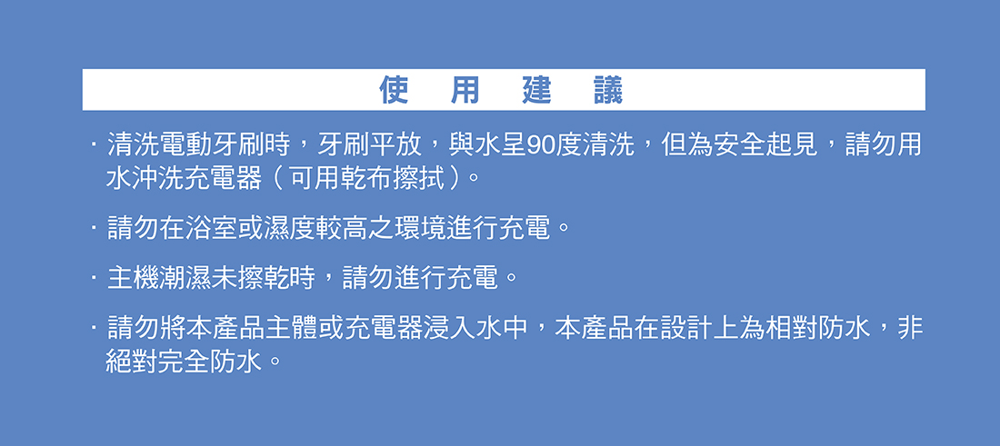

產品介紹

超乎想像的極淨科技
日本同步最新光觸媒科技，徹底除垢並減少牙菌斑附著，四種刷毛組合可深入難刷齒縫與角度，清潔有效率。
- 每分鐘31,000次高頻音波振動，潔牙更有效率。
- 特殊極細刷毛，直徑只有0．01mm，不傷牙齦。
- 運轉音量低於50分貝，為刷牙帶來寧靜新感受。

詳細資訊
1組
詳細使用方法請參閱操作說明書。
為免造成意外或有損身體健康:
- 請千萬不得於心臟調節器等醫療用電子儀器或家用電子治療器附近進行使用。以免產品之微弱電流將導致醫療用電子儀器或家用電子治療器產生錯誤動作，造成意外或有損身體健康。
- 懷孕中及產後1個月內請勿使用。
- 不得提供給1歲以下孩童或無法自行操作者使用，亦不得讓口腔知覺較弱者使用，以防造成口腔傷害。
有下述狀況者，請諮詢醫師再使用。
- 心臟疾病者、截至目前曾罹患重病者。
- 有惡性腫瘤者、有發熱性疾病者、感染性疾病者。
- 過敏體質者、有曾因金屬過敏等就診紀錄者。
- 患有嚴重牙周病、治療中牙齒或口腔內具有令人擔心症狀者。
- 音波振動牙刷主體1台
- 專用刷頭(含色圈) 4支
- 充電器(含刷頭底座)1台
- 操作說明書1本